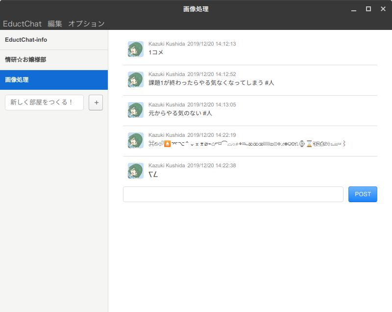

|
↑起動時画面 ↑チャット画面 |
EductChatElectron Firebase EductChat
Slackが使えない悲劇弊学の演習環境はサーバー、クライアント共にMacを使用している。しかし、クライアント側のOSが10.9のMarvericsと大変古く、 インストールされているChromeなどのバージョンもかなり古いため、クライアントソフト版、ブラウザ版共にSlackが起動しない。 そこで、簡易的ではあるが、Slackの代わりとなるチャットアプリケーションをElectronで作成した。写経これは、技術評論社のElectronではじめるアプリ開発 JavaScript/HTML/CSSでデスクトップアプリを作ろう(野口将人・倉見洋輔 著)の 第三章「チャットアプリケーションを作ろう」のコードを一部改変して作ったものである。FirebaseこのアプリケーションはバックエンドにGoogleのFirebaseを用いている。チャットルーム等のデータはリアルタイムデータベースを用いている。 EductChatクライアントAで投稿した内容が即座にクライアントBに反映される様子を見たときは感動した。(写経とはいえ自分で作成したものなので)えっ！演習環境のシステム更新！？！？？！？どうやら演習環境が来年度はじめについに更新されるらしい。Macが新しいものに更新されるということでこれでようやくSlackが使えることだろう。マジか。 まぁSlackが使えるまでのつなぎだから別にいいし……(震え声) |